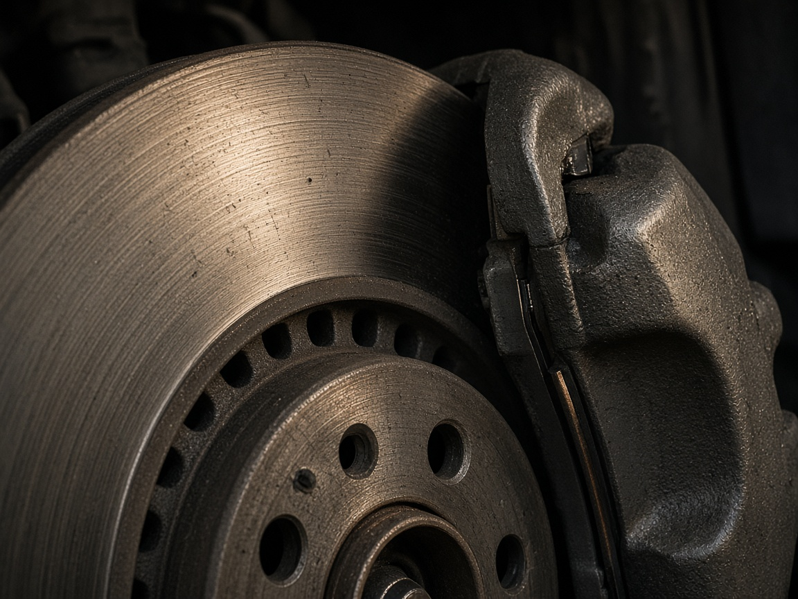
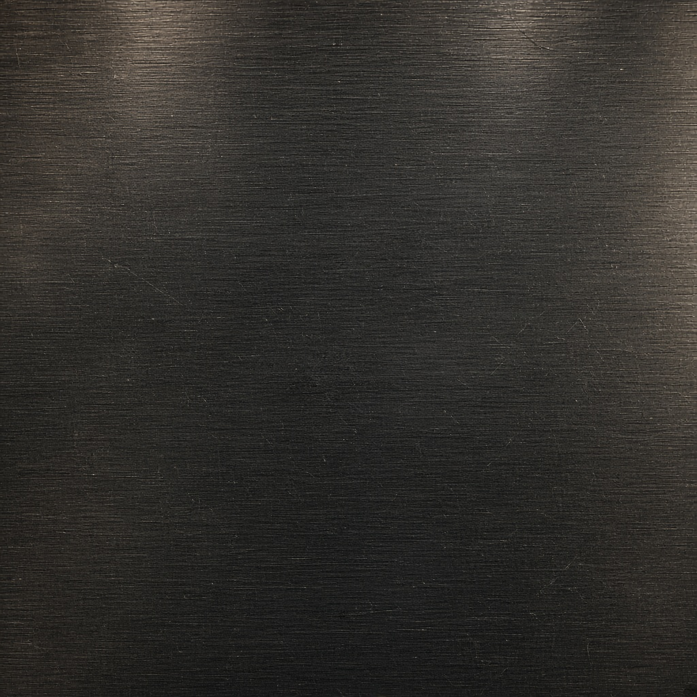

01
Лендінг
Одна сторінка. Послуга, наступний крок і форма. Людина з телефона не шукає, куди натиснути.

Студія сторінок
Вітрина, дім послуги і кампанія на сезон. Кадр, рух і текст зібрані в одну річ.

01
Одна сторінка. Послуга, наступний крок і форма. Людина з телефона не шукає, куди натиснути.

02
Кілька екранів, коли однієї сторінки мало: що входить у роботу, як доїхати, кого покликати.

03
Сторінка на один сезон. Один предмет, один жест, жодного зайвого блоку.

Ніч · сервіс
Нічний сервіс. Ціна стоїть до запису. Сторінка тримає темряву, а не шум прайса.
Відкрити кадр
Сезон · ательє
Дім предметів. Дуб, метал і папір. Колекція, якій вистачає однієї повільної сторінки.
Відкрити дімТариф
Зв’язок
Профіль відкритий. Далі говоримо про кадр, обсяг і термін.
Відкрити профіль